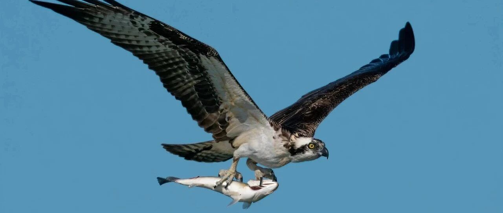

永不空军！
今天我又去钓鱼了，运气很好，鱼族长果断在开局没多久，就给我这位打窝仙人献祭了一条皮毛很漂亮的八斤大鲤鱼。
手机上正和朋友们唠磕着，猛地一个大黑漂......一番搏斗，我以湿身的代价将其擒获。
曾想过带我儿子来钓鱼，来改善他性急的缺点，考虑到水边不安全，还是作罢。也曾带他看太阳一点点升起，一点点落下；花一朵朵开，一瓣瓣地落下；稻苗抽穗，稻谷成熟，都是缓慢的。
最后让他开始学围棋，在下棋中边学习耐住性子和大局观，边经历挫折教育，效果还不错。
人到中年有个爱好挺好的，媳妇都不用担心钓鱼佬在外面有花花草草，那些个骚姿弄首的，哪有钓鱼来得有诱惑力？
咱是有点搞不懂普通人去看直播打赏是啥心理，用我媳妇的话说，要让我去看直播，除非主播给我付钱。
抖音的直播和短视频做得不错，商业化很成功，在算法机制下，每个博主都是平台的养料，随时可以废弃。
博主为了崛起和维持热度，不得不一直在平台上做流量充值（业内叫投流），带货也是如此，很依赖流量充值。
在互联网的世界里，流量是最贵的，像今年很火的短剧，动不动就是营收几千万上亿元，但鲜为人知的是，这营收的净利润并不高，因为流量（投流）往往能占到80%，甚至更高些。
手握流量的平台，干的是稳赚不赔的生意，“包租婆、包租公”的角色。而短剧这些产品，看似风光，实则承担着风险，火了很容易被整治；对各类直播的整治和规范，预计也在路上了。
平台呢，偶尔挥动它“神奇的魔法棒”，让平凡的人大火，给普通人看到做网红的希望和曙光，如此才会有更多的人投身“网红”这个行业。
我没用抖音，但抖音的系统和运行机制，倒是很熟，2016-2018年曾接触过字节跳动（现已经改名抖音集团）的D轮、E轮、Pre-IPO融资，所以对抖音和头条这类产品的底层逻辑还算了解。
在算法机制下，商业化取得巨大成功，助力今年的字节跳动营收大增，上半年营收大约540亿美元（第二季度营收290亿美元），妥妥的互联网巨头，国内市场占营收的80%，海外只占20%。
现在抖音又开始测试付费。抖音等短视频和直播，很适合割韭菜，有商业大师教你怎样经营企业，从股权架构到经营理念。
在我接触过的各类圈层，没人会轻易把自己赚钱的方法往外说，能含蓄点醒他人，都算是他人极好的造化了。
但这么厉害的大师，不仅没自己下场干个优秀的公司跟咱们竞争，反而纯卖课程了，嗯，真是个“大善人”。
... ...
1、SpaceX“星舰”明天晚上9点发射，这是“星舰”第二次发射。今年4月“星舰”在美国德州进行了首次试飞，但升空四分钟后就发生爆炸；马斯克表态本次试飞只要完成一二级火箭的分离，那就算成功。
“星舰”作为人类历史上体积最大、推力最强的重型运载火箭，其荷载达150吨以上，如果用于发射18.4吨的星链卫星，一次可以发射400颗。
马斯克的梦想，是“星舰”成功后，规模化生产，打造1000艘“星舰”组成太空舰队，将10万人和相关物资运送到火星。
我儿子对天文方面的东西很感兴趣，尤其喜欢火箭和各类航天器，对马斯克的SpaceX特别爱，虽然我也给他普及过长征五号，但不妨碍他对猎鹰重型火箭的热爱，模型都买了全套。
所以明天晚上有可能没更新，陪娃看“星舰”发射。
2、马云家族信托拟出售阿里巴巴创始人股份，涉资8.7亿美元。阿里美股盘前跳水。阿里的根据地淘宝天猫，这两年被抖音和拼多多挤压得有点狠，传统电商是越来越难。
3、今天出了2500股腾讯，成本成功降低到两位数以内，等后续涨上去了，再慢慢操作，把成本一点点掏出来，浮盈放着任它涨跌都无所谓。
4、厦门岛内放开限购。从2019年央行发布的数据来看，厦门的居民杠杆率约96%，仅次于杭州，名列全国第二；居民资金负债率，即地方住户负债/住户储蓄存款的比值，超过160%，名列全国第一。
2018年时，市场“钱荒”，厦门房价跌了不少，后来又慢慢涨回来了。现在的厦门，二手房价连续16个月下跌，几个月前已经放开岛外的限购，但效果甚微。
现在放开岛内的限购，短期内会有一定托底作用，长期要看闽南的购买力，以及安溪龙岩等地的互联网杀猪盘大佬，这些过去几年在厦门扫了很多房子。
市场预期不行，这些资金大概率就不会来扫货，这不，中骏都暴雷了。